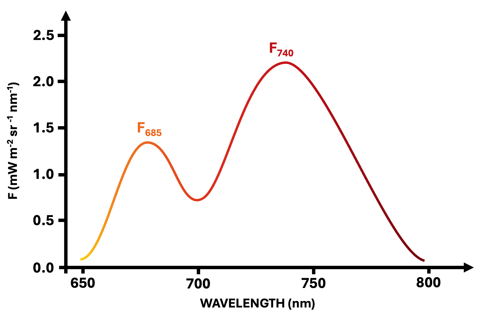

01
Plants absorb light
Leaves absorb incoming solar radiation, especially in wavelengths linked to chlorophyll activity. This captured energy powers the photosynthetic machinery.
Solar-induced fluorescence, or SIF, is a faint glow emitted by plants during photosynthesis. Because it is linked to plant function rather than structure, it offers a way to better understand vegetation productivity, stress, and seasonal dynamics across ecosystems from space.
When chlorophyll absorbs sunlight, the absorbed energy is partitioned among photochemistry, heat dissipation, and fluorescence. A very small fraction is re-emitted as solar-induced fluorescence. That weak signal can be observed remotely and used as an indicator of photosynthetic activity.
Leaves absorb incoming solar radiation, especially in wavelengths linked to chlorophyll activity. This captured energy powers the photosynthetic machinery.
Not all absorbed energy becomes carbon uptake. A small part is re-emitted as solar-induced fluorescence, creating a measurable optical signal.
Because SIF is closely linked to photosynthetic processes, it can often reflect productivity and stress more directly than greenness alone.
SIF emerges from chlorophyll excitation. After light is absorbed, some energy is used in photochemistry, some is dissipated as heat, and some is re-emitted as fluorescence. This fluorescence typically appears as a red and far-red glow, with characteristic peaks near 685 nm and 740 nm. Because these emissions are tied to the functioning of the photosynthetic apparatus, SIF provides a physiological signal, not just a structural one.

Although SIF is a faint signal, it can be retrieved passively from space using high-resolution spectrometers. In this project, we use satellite-based observations from the TROPOMI instrument, which provides global measurements of solar-induced fluorescence at 743 nm with daily coverage. These observations are aggregated into weekly time series and grouped by vegetation type and climate zone to derive representative seasonal signatures. This ensures a transparent and reproducible framework for comparing vegetation functioning across ecosystems while preserving their temporal dynamics. Further details on the data sources, processing steps, and methodology are available on the About page .
SIF lets us observe not only how green vegetation is, but how actively it is functioning.
This is what makes SIF particularly valuable for remote sensing of crop productivity, ecosystem activity, seasonal change, and stress response.
Traditional vegetation indices such as normalized difference vegetation index (NDVI) are extremely useful, but they capture canopy structure and greenness. SIF adds something different: a window into vegetation function. This makes it especially valuable when vegetation remains green but photosynthesis is changing because of drought, heat, air pollution, phenology, or atmospheric demand.
See this comparison in action
You can compare how SIF, gross primary productivity (GPP), and NDVI relationships change across vegetation types and climate zones - observe how SIF remains closely linked to productivity where greenness diverge.
Go to Relationships